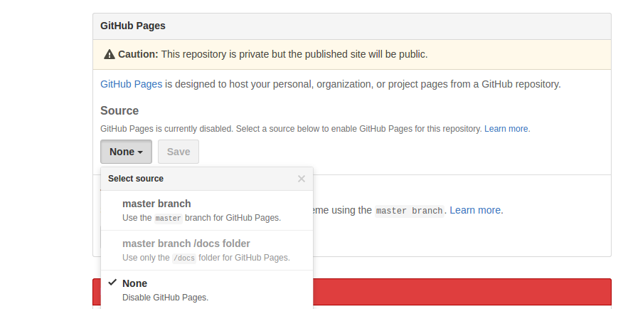

Creación de una gh-page
Suponiendo que tenemos un código correspondiente a una página web, para incluirlo en una gh-page se puede hacer de varias maneras:
- Mediante Interfaz Gráfica: Github proporciona por cada repositorio una opción en la que indicamos la activación de una gh-page y hacia que rama queremos que apunte.

- Mediante la creación directa de una rama gh-pages: Otra manera de publicar directamente una gh-page es crear una rama llamada gh-pages en la que alojemos ahí nuestro código de la página web.

Creación de la rama gh-pages en el repo local, donde colocaremos todos los archivos perteneciente a la website que queremos alojar:
git branch gh-pages
Nos posicionamos localmente en la rama gh-pages creada, y subimos ahora directamente todos los archivos de esa rama, a la rama gh-pages del repo remoto, si no está creada, la crea automáticamente:
git push origin gh-pages